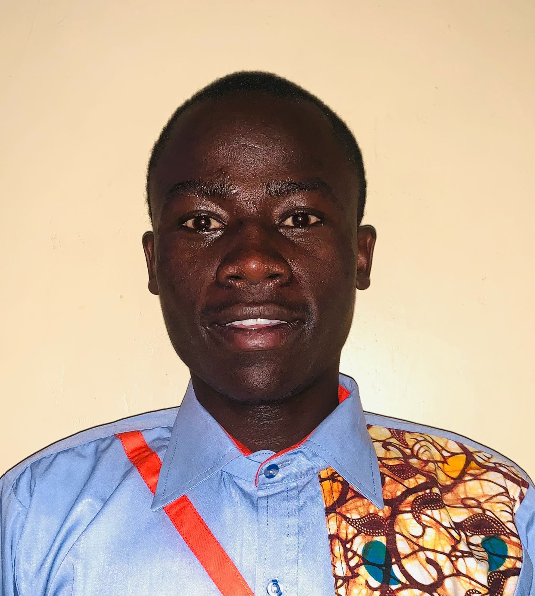

Resume
Explore my cv
Personal Details
- Name:Tom Omollo Alando
- Date of Birth: 25 th SEPTEMBER 2003
- Nationality: Kenyan
- ID Number: 41720220
- Gender: Male
- Languages: English, Kiswahili and luo
- Religion: Christian
- Physical:DEDAN KIMATHI UNIVERSITY OF TECHNOLOGY ALONG NYERI – MWEIGA ROAD P.O. BOX 657-10100, NYERI-KENYA
- Home adress:KIBERA, AYANY ESTATE,Guardian: +254 722 456 719, Parent (Mother): +254 700 083 024, P. O. BOX 120-20400, NAIROBI- KENYA.
- Email: alandotom631@gmail.com
- Mobile Number +254 796 667 407
PROFILE STATEMENT
God fearing, loyal and hardworking gentleman, as well as self-motivated team leader focused in delivering the best with great time management and always passionate to learn new skills.
CAREER OBJECTIVES
To use my knowledge and skills with commitment and efficiency for the betterment of the organization and the society at large, to myself both professionally and attitude wise so as to achieve set goals.
PROFESSIONAL AND EDUCATION BACKGROUND
Bachelour's Degree of Science in Geospatial Information Science & Remote sensing
Level
Undergraduate
Year
2022 - present
Institution
Dedan Kimathi University of Technology P. O BOX 657-10100 Nyeri, Kenya
Award
Bachelour's Degree of Science in Geospatial Information Science & Remote sensing
KENYA CERTIFICATE OF SECONDARY EDUCATION(KCSE)
Level
Secondary Eduction
Year
2018-2022
Institution
Chianda Boys High School P. O. BOX 14-40604 Rageng’ni, Kenya
Award
Kenya Certificate of Secondary Education (KCSE) B+ (plus) 67/84AGP
KENYA CERTIFICATE OF PRIMARY EDUCATION(KCPE)
Level
Primary Eduction
Year
2017-2027
Institution
Oseno primary School P. O. BOX 99-40600 Siaya, Kenya
Award
Kenya Certificate of Primary Education 338/500AGP
Computer Application Packages
Level
Computer Packages
Year
july- september 2022
Institution
Institute of Advanced Technology (IAT)
Award
Certificate
Work Experience
INTERNAL ATTACHMENT
16 th January 2024 - 15 th March 2024
Dedan Kimathi University of Technology, Main Campus Nyeri, Kenya, Institute of Geomatics, Geospatial Information Systems and Remote Sensing.
Responsipilities and Achievements
- Mapping using Unmanned Aerial Systems (UAS) (Drone); Project Planning, Arial Survey, Data Processing, Feature Extraction, Output Presentation and Visualization.
- Cartographic Drawing and Survey Plans.
- Development of Field Data Collection Application and Mobile Mapping.
- Creation of Geodatabase, Geo-enrichment and Data Management, Geoprocessing, Representation and Visualization of Spatial Data.
- Computer Aided Map Generation and Advanced formatting with Esri’s ArcMap and Qgis.
- Crowdsourcing with Collection Application for ArcGIS and resulting Data Visualization with Dashboards.
- Remote Sensing: Acquisition of remotely sensed data including Satellite data from multiple sources, performing Basic Geoprocessing Functions and Feature Extraction Workflow.
- Surveying; Densifying and Establishment of Horizontal and Vertical Controls; Traversing, Levelling and Office Computations.
- Reporting to the Attachment Coordinator.
Training and workshops
Physical, State Of the Map Kenya 2024
6 th september 2024 - 8 th september 2024
The University of Nairobi Towers.
Trained on:
- Importance of OSM data
- Incorporating OSM into Academic curricular
- Open Stret Map and GDPR
- Open mapping through tropical forest biodiversity.
- UN Maps- Supporting Peace with Open Data.
Spatial Data Science: The New Frontier in Analytics
28th August to 8th October 2024
VIRTUAL:Environmental System Research Institute (ESRI)
Trained on:
- Spatial Data Engineering
- Exploratory analysis and Visualization
- Pattern Detectionand Predictive Analysis
- Suitability Modelling in Data
- Deep Learning
- Communicating results using ArcGIS story maps
3 Days Basic QGIS Training
25th September to 27th September 2024
VIRTUAL:Geospatial Information Systems Training Peogram
Trained on:
- Understanding pf Open Street Map (OSM)
- Getting Started with ID editor and JOSM
- Introuction to Qgis & its interface
- Analysis on QGIS using OSM data
DeKUT GDEV YouthMappers Mapathon
2nd November 2024
Dedan Kimathi University of Technology
Trained on:
- Mapping using both ID Editor and JOSM
- Adavantages of using open street map to map the affacted areas by either floods or drought
- Mobile Mapping using Every Door APP.
AWARDS
Certificate of Merit for Academic Excellence in the First Year of Study.
First Position in Bachelor of Science in Geospatial Information Science and Remote Sensing, Institute of Geomatics, GIS & Remote Sensing (IGGRES), Dedan Kimathi University of Technology, Nyeri-Kenya
Certificate of Merit for Academic Excellence in the Second Year of Study.
First Position in Bachelor of Science in Geospatial Information Science and Remote Sensing, Institute of Geomatics, GIS & Remote Sensing (IGGRES), Dedan Kimathi University of Technology, Nyeri-Kenya
Certificate of Participation in the GDEV OPEN-HACK 2024
Third position in the hackathon competition, organized by the Geospatial Developers Club.
Certificate of Participation in the 3-Days Basic QGIS Training
Participated in the 3-Days QGIS Training from 25 th -27 th September 2024
Certificate of Recognition “summitting Mount Kenyan peaks Lenana” 2023
Participated in the 7 th Annual “Climb to Educate” Mt Kenya 4985M expedition.
SKILLS
- Good team player
- Ability to work Independently
- Self Motivated
- Leadership
- Meticulous in approaching duties
HOBBIES AND INTERESTS
- Bike riding
- Football
- Athletics
- Hiking
- Community Service
REFEREES
Dr. Daniel Nyangweso,
Tel +254 721 916 512
Senior lecturer,Institute of
Geomatics, GIS & Remote Sensing
(IGGRES),
Dedan Kimathi
University of Technology, Nyeri-
Kenya.
Mr. John Awuor Awinda
Tel +254 724 565 419.
The Head of Peer counseling Department
Chianda Boys High School, P.O.BOX 14-40604 Rageng’ni, Kenya.